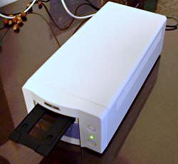

フィルムスキャナ考察 ： ネガフィルムの取り込み
Home > Software > ソフトウエア開発・サーバ管理のメモ帳 > このページ
Created on 2002/04, Last Update
| 概要 スキャナドライバの設定 スキャン実例（晴天日） スキャン実例（曇天日・建物内） 手動でネガ反転処理 |
注意：このページは最終更新が2002年04月で、現在では利用できない情報の可能性があります。

安価なフィルム スキャナ MINOLTA DIMAGE SCAN DUAL II を使ってネガ フィルムを取り込みます。この機種は、「ホコリ取り機能がない」とか、「色再現性がおかしい」とかいろいろ言われていますが、約4万円のスキャナとしては、「仕方ないかな...」と言うところでしょうか。機器付属の標準TWAINドライバでは、ポジ（リバーサル）フィルムはそれなりの色再現性を見せてくれますが、ネガ フィルムはちょっと遠慮したいような色になります。そこで、汎用ドライバvuescanを使ってどれくらいマトモになるかも試してみました。
プロ用の機材でデジタルデータ化されたPhoto CDの画像と、デジタルカメラで撮影された画像との比較も行います。
結論から言えば、「ある程度はマトモになるが、ネガである以上、推測に基づく色を作っているだけ」ということを再度認識しました。「重要な写真はポジ（リバーサル）フィルムで撮る」ほうが良いかもしれません。
ここでは、「標準TWAINドライバ」、「汎用ドライバ vuescan」、「PhotoCD」、「サービス版プリント」、「デジタルカメラ」で比較しています。